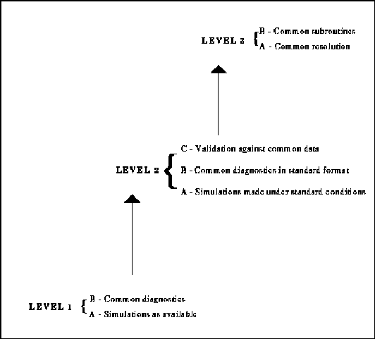

Figure 1: Levels of model intercomparison as defined by the Working Group on Numerical Experimentation (WGNE). The attributes of lower intercomparison levels are assumed to be included in higher levels when appropriate.

Return to Report Table of Contents
Last update May 1, 1996. For further information, contact Larry Gates ( gates5@llnl.gov)
LLNL Disclaimers
UCRL-ID-111532 Rev1